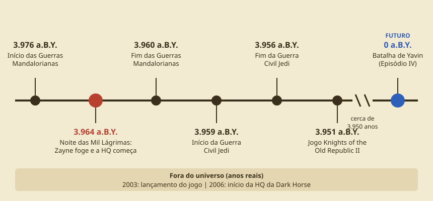

Cavaleiros da Antiga República
A HQ
Cavaleiros da Antiga República é uma HQ da Dark Horse Comics (Planeta Agostini no Brasil) sobre Zayne Carrick, um aprendiz Jedi que vira fugitivo após ser acusado injustamente de matar seus companheiros Padawans.
Autoria e publicação
O roteiro principal é de John Jackson Miller, com diferentes artistas ao longo das edições.
Época
A história se passa cerca de 4 mil anos antes dos filmes.
Como navegar
O site é dividido em seções principais. Veja o que você encontra em cada uma:
- Textos
- Universo
- Personagens
- Glossário com termos do universo Star Wars
- Tabela de volumes da HQ
- Formulário de inscrição
Linha do tempo

- 3.976 a.B.Y.: início das Guerras Mandalorianas.
- 3.964 a.B.Y.: Noite das Mil Lágrimas, Zayne foge e a HQ começa.
- 3.960 a.B.Y.: fim das Guerras Mandalorianas.
- 3.959 a.B.Y.: início da Guerra Civil Jedi.
- 3.956 a.B.Y.: fim da Guerra Civil Jedi.
- 3.951 a.B.Y.: jogo Knights of the Old Republic II.
- 0 a.B.Y.: Batalha de Yavin (Episódio IV), marco do futuro.
O cenário